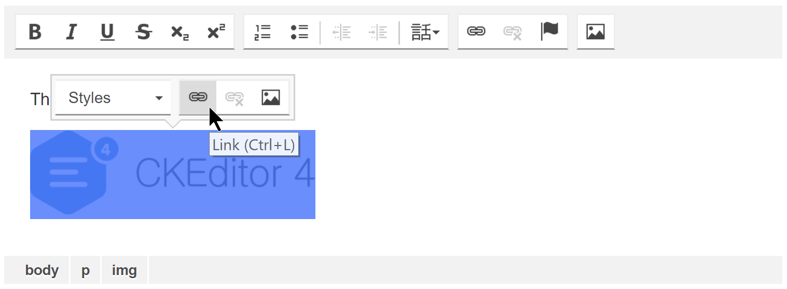
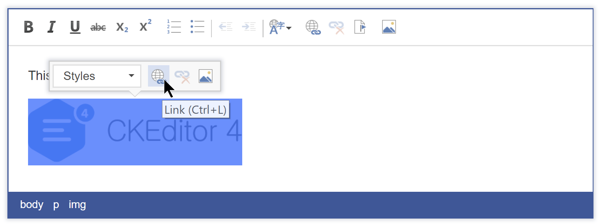

CKEditor 4
Status check - now and the future

4.8.0
- Balloon Toolbar
- Paste images from Word
- Clipboard API for Edge
- Minor enhancements requested by the customers
- Multiple minor fixes
4.8.0 - Balloon Toolbar
4.8.0 - Balloon Toolbar
Context manager
- widgets
- CSS selector
- callbacks - for maximum control
editor.balloonToolbars.create( {
buttons: 'Link,Unlink',
cssSelector: 'a[href]',
widgets: 'image2,placeholder',
refresh: function( editor, path, selection ) {
return myCustomApp.toolbarsEnabled() && path.contains( 'a' );
}
} );
4.8.0 - Balloon Toolbar
Third party skin compatibility
4.8.0 - Balloon Toolbar
"Office 2013" skin support
4.8.0 - Balloon Toolbar
"Bootstrapck" skin support
4.8.0 - PFW Images
Image uploading integrated out of the box (CKF3)
We would like to integrate it with CS soon
4.8.0 - Edge Clipboard
Enables Edge users to:
- Manipulate clipboard content
- Use our fancy PFW style inliner from 4.7.0
This enhancement was timed perfectly with PFW images
4.8.0 - Other Changes
- Minor enhancements requested by the Customers
- Multiple minor enhancements/fixes
4.9.0
- Easy image
- Mobile pasting
- Features registered through the toolbar (API)
Future
So what's next?
- Replace contextmenu based options (tabletools, list style)
- Karma switch
- "Quick table"